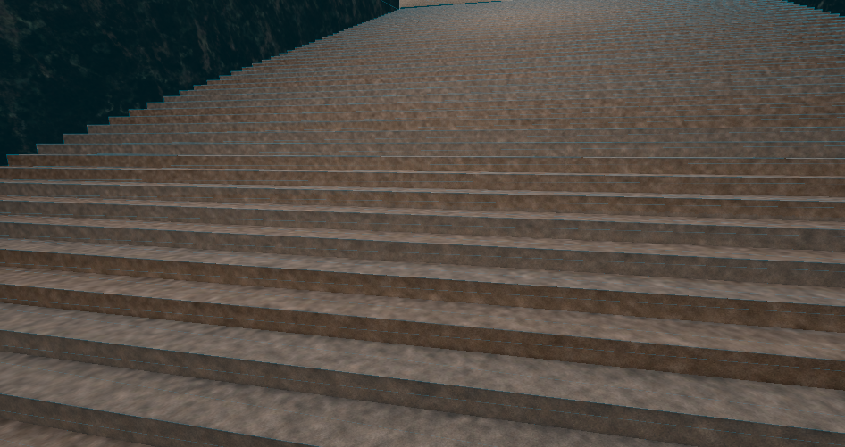
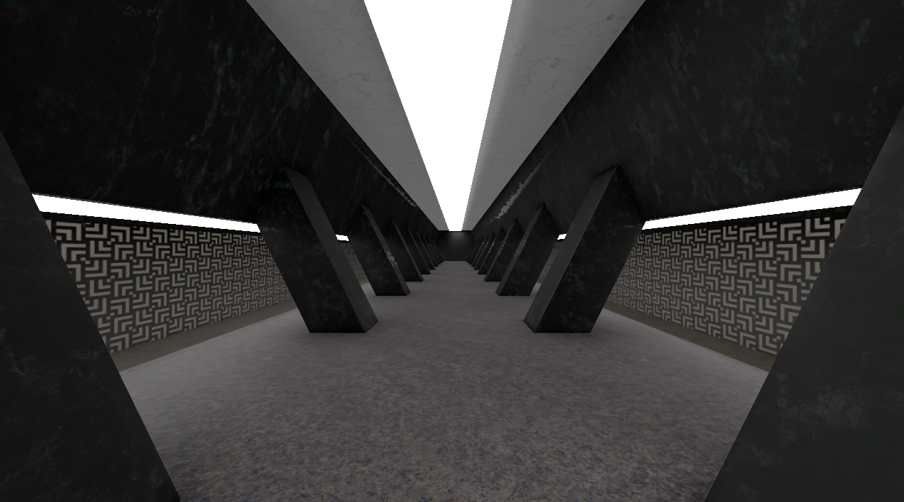

Internal Eternal: Fix Godot lightmapper problem
The Problem
Maybe for simple geometry the Godot lightmapper is good, but is absolutely not for complex one (which needs to be lightmapped).
Problem - I want to lightmap a large location, since using dynamic lights is too expensive.
With Godot lightmapper I can bake only on low settings without denoiser, which means the result is polluted with noise.
I cannot denoise the image later, using only Godot builtin and addon functions.

 Examples of noise pollution (+ image of old station)
Examples of noise pollution (+ image of old station)
The solution
Blender offers GPU or CPU lightmapper (while Godot offers only GPU one, and won't implement CPU lightmapper) Also, Blender has dynamic lighting by default (at least at Cycles renderer (which is necessary for baking))
I know, that Godot is realtime engine and Blender Cycles is not, but I now prefer to lightmap in Blender.
How to import this lightmap to Godot.
Godot internal .lmbake format is not suitable for storing lightmaps other than Godot.
An idea came to me - reuse old SCP-173 shader I wrote (this shader simply mixes 2 textures), but for lightmaps.
I replaced the second albedo texture with a lightmap, and replaced the UV with UV2.
The result shader
shader_type spatial;
// NOTE: Shader automatically converted from Godot Engine 4.3.1.rc's StandardMaterial3D.
render_mode blend_mix, depth_draw_opaque, cull_disabled, diffuse_burley, specular_schlick_ggx;
//Made by Yni. License - MIT license.
uniform sampler2D albedo: source_color;
uniform sampler2D lightmap: source_color;
uniform float point_size : hint_range(0.1, 128.0, 0.1);
uniform float roughness : hint_range(0.0, 1.0);
//uniform sampler2D texture_metallic : hint_default_white, filter_linear_mipmap, repeat_enable;
//uniform vec4 metallic_texture_channel;
uniform sampler2D texture_roughness : hint_roughness_g, filter_linear_mipmap, repeat_enable;
//uniform float metallic : hint_range(0.0, 1.0, 0.01);
uniform sampler2D texture_normal : hint_roughness_normal, filter_linear_mipmap, repeat_enable;
void fragment() {
vec4 tex_a = texture(albedo, UV);
vec4 tex_b = texture(lightmap, UV2);
ALBEDO = (tex_a.rgb + tex_b.rgb) * 2.0;
//float metallic_tex = dot(texture(texture_metallic, UV), metallic_texture_channel);
//METALLIC = metallic_tex * metallic;
vec4 roughness_texture_channel = vec4(0.0, 1.0, 0.0, 0.0);
float roughness_tex = dot(texture(texture_roughness, UV), roughness_texture_channel);
ROUGHNESS = roughness_tex * roughness;
// Normal Map: Enabled
NORMAL_MAP = texture(texture_normal, UV).rgb;
}
The result
